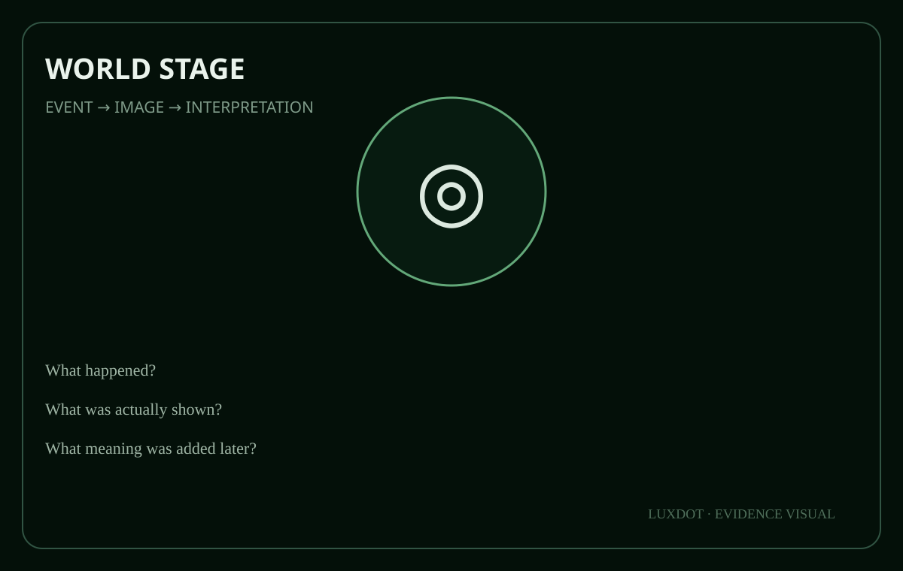

تيس فان فيلتهوفن · 16 سنة
توفي في مارس 2025 إثر حادث أثناء تفكيك عربة كرنفال. ناديه في رامسدونك وثّق أثره في الفريق والمجتمع المحلي.
بحث إنساني صغير في حجمه وكبير في دلالته: كيف انتقلت تجربة فقد عائلي سنة 2025 إلى مبادرة لاستعادة أثر تاريخي كي يخدم آباءً وأمهات يعيشون الحزن اليوم.

توفي في مارس 2025 إثر حادث أثناء تفكيك عربة كرنفال. ناديه في رامسدونك وثّق أثره في الفريق والمجتمع المحلي.
يوخيم وصف تيس علنًا بأنه achterneef له، وتحدث عن مساعدته لوالديه وعن اختباره المباشر لعمق ألم الوالدين بعد فقد طفل.
تقاطع LuxDot: الذاكرة الحية لا تحفظ الماضي فقط؛ تختبر إن كان الماضي قادرًا على خدمة إنسان حي من دون استغلال حزنه أو تحويله إلى رمز.